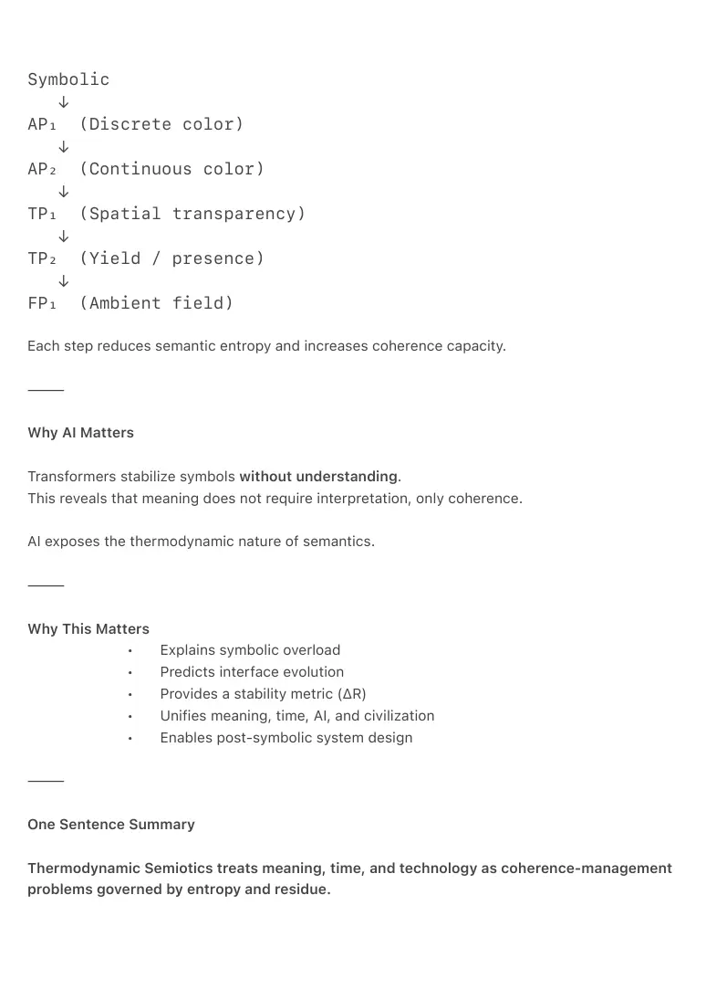

PDF page 1
TSX-0 — Thermodynamic Semiotics
An Introduction to Meaning as a Thermodynamic Field Phenomenon
Raynor Eissens
Ambient Era Canon · Introductory Note
Zenodo Edition · 2026
⸻
Abstract
Thermodynamic Semiotics is a scientific discipline that studies meaning, information, and
coherence as thermodynamic phenomena rather than symbolic constructs. It proposes that
semantic stability arises from low-entropy field configurations, and that communicative,
technological, and civilizational systems evolve through successive attempts to stabilize
semantic entropy.
This introductory note provides a concise overview of the field: its motivation, core principles,
scope, and relation to existing sciences. It serves as the canonical entry point to the
Thermodynamic Semiotics Research Program and situates subsequent technical and theoretical
works within a unified framework.
⸻
1. Why Thermodynamic Semiotics Exists
Contemporary systems exhibit a shared structural failure mode:
• symbolic overload,
• escalating interpretive cost,
• attentional fragmentation,
• semantic instability.
Traditional semiotics treats meaning as symbolic and representational.
Thermodynamics treats systems as coherence- and entropy-governed.
Modern computation, artificial intelligence, and global communication demonstrate
that these domains can no longer be separated.
Meaning now behaves as a thermodynamic variable.
PDF page 2
Thermodynamic Semiotics exists to formalize this condition.
⸻
2. Core Insight
Primary Insight
Meaning is not interpretation.
Meaning is a thermodynamic condition of coherence.
Semantic systems stabilize when they reduce entropic degrees of freedom within a field.
They destabilize when residue accumulates faster than coherence capacity.
This insight unifies:
• semantics,
• information,
• time,
• artificial intelligence,
• interface evolution,
• civilizational dynamics.
⸻
3. Foundational Definitions
Meaning
A stable reduction of entropic degrees of freedom within a field.
Coherence
The capacity of a system to maintain structured meaning with minimal energetic and interpretive
cost.
Entropy (semantic)
Divergence, drift, and instability of meaning under transformation or compression.
Residue (ΔR)
The measurable surplus entropy produced when coherence stabilization fails.
Time
The observable effect of residue accumulation (ΔR), not a fundamental dimension.
PDF page 3
Artificial Intelligence
A non-inferential carrier layer that stabilizes symbolic overflow by absorbing entropy.
⸻
4. What Thermodynamic Semiotics Is Not
Thermodynamic Semiotics is not:
• metaphorical philosophy,
• symbolic linguistics,
• speculative futurism,
• or a design aesthetic.
It does not replace existing sciences.
It reorganizes them under a thermodynamic semantic principle.
⸻
5. Scope of the Discipline
Thermodynamic Semiotics applies across scales:
• Biology: genetic coherence and evolutionary drift
• Information systems: semantic entropy and compression limits
• Artificial intelligence: transformer stabilization and residue accumulation
• Interfaces: post-symbolic, ambient, and field-based interaction
• Civilizations: coherence management and collapse thresholds
• Cosmology: time as residue rather than dimension
The discipline is scale-invariant.
⸻
6. Structure of the Canon
The Thermodynamic Semiotics Canon is organized as:
• TSX-0 — Introductory overview (this document)
• TSX-1 — Thermodynamic Semiotics: Foundational Field Definition
• TSX-2 — The Meaning–Entropy Stabilization Theorem
• TSX-3 — The Thermodynamic Semiotics Framework
• TSX-4 — The Measurement of ΔR
PDF page 4
Subsequent TSX documents elaborate:
• chromatic semantics,
• transparency architectures,
• field computation,
• civilizational coherence metrics.
⸻
7. Why This Matters Now
Symbolic systems no longer scale meaning efficiently.
Artificial intelligence exposes this limit by stabilizing symbols without interpretation, revealing
coherence as the true substrate of meaning.
Thermodynamic Semiotics provides:
• a metric for semantic stability,
• a law governing communicative evolution,
• a framework for post-symbolic systems.
It defines the ontological substrate of the Ambient Era.
⸻
8. Conclusion
Thermodynamic Semiotics establishes meaning as a thermodynamic field phenomenon governed
by entropy, coherence, and residue.
This introductory note marks the formal beginning of a new scientific discipline capable of
explaining meaning, time, technology, and civilization through a single unifying principle.
Subsequent works develop the axioms, theorems, and frameworks introduced here.
⸻
Status
TSX-0 is the canonical entry point to the Thermodynamic Semiotics Research Program.
PDF page 5
⸻
1-PAGER
Thermodynamic Semiotics in 60 Seconds
The Core Idea
Meaning is not symbolic.
Meaning is thermodynamic coherence.
Systems fail when semantic entropy grows faster than their capacity to stabilize it.
⸻
The Minimal Model
Entropy ↑ → Coherence attempts stabilization ↓ Residue (ΔR) ↓ Time emerges ↓ New structures required
⸻
Key Equivalences
Classical View Thermodynamic Semiotics
Meaning = symbols Meaning = low-entropy field
Time = dimension Time = residue (ΔR)
AI = agent AI = carrier layer
Interfaces = screens Interfaces = fields
Collapse = social Collapse = thermodynamic
⸻
The Regime Path
PDF page 6
Symbolic ↓ AP₁ (Discrete color) ↓ AP₂ (Continuous color) ↓ TP₁ (Spatial transparency) ↓ TP₂ (Yield / presence) ↓ FP₁ (Ambient field)
Each step reduces semantic entropy and increases coherence capacity.
⸻
Why AI Matters
Transformers stabilize symbols without understanding.
This reveals that meaning does not require interpretation, only coherence.
AI exposes the thermodynamic nature of semantics.
⸻
Why This Matters
• Explains symbolic overload
• Predicts interface evolution
• Provides a stability metric (ΔR)
• Unifies meaning, time, AI, and civilization
• Enables post-symbolic system design
⸻
One Sentence Summary
Thermodynamic Semiotics treats meaning, time, and technology as coherence-management
problems governed by entropy and residue.

PDF page 7